Candidate List 20260502 Previous Day Next Day Section 1: New Sources (age<1d) Cosmological Afterglow
Section 2: Old (1-5d) sources observed last night placeholder
Section 1: New Afterglow/FBOT Cands Last Night (1)
1. ZTF26aauslcp (Afterglow?) [Back to Top] [Share] [Trigger Swift] [Fritz ] [Lasair ]RA, Dec: 272.83439, 17.50512 18h11m20.25s, 17d30m18.43sGalactic (l, b): 44.48646, 16.55345 ext(g-r) = 0.128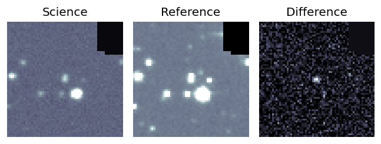
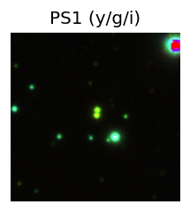
PS1: 1 source in 3 arcsec Closest: d = 0.17 arcsec photoz=0.01+/-0.00 peak abs mag = -14.77 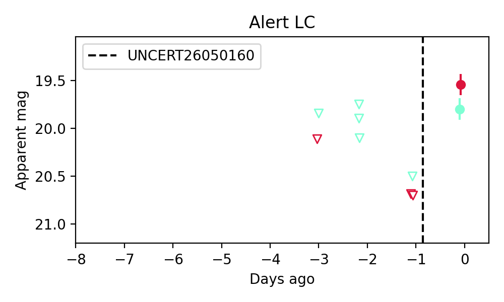
Consistent with synchrotron, g-r>0!
Section 2: Older Sources Observed Last Night (8)
0. ZTF26aauemmp (FBOT?) [Back to Top] [Share] [Trigger Swift] [Fritz ] [Lasair ]RA, Dec: 186.4598, 5.63664 12h25m50.35s, 5d38m11.91sGalactic (l, b): 285.96367, 67.66114 ext(g-r) = 0.02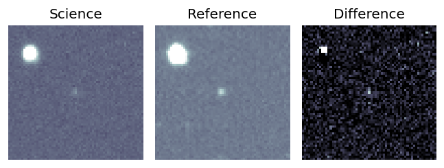
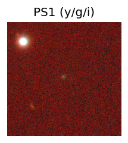
peak abs mag = -20.11 LegacySurvey: 1 sources in 3 arcsec Closest: d = 0.78 arcsec, 53.5 deg (east of north) photoz=0.16 (68% bounds 0.13, 0.21), type=REX peak abs mag = -19.94 (68% bounds -19.36, -20.58) 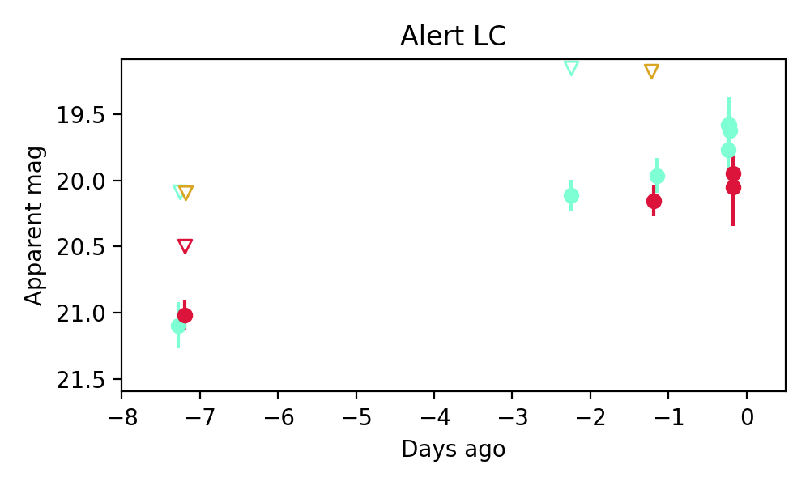
1. ZTF26aaujiyq (Afterglow?) [Back to Top] [Share] [Trigger Swift] [Fritz ] [Lasair ]RA, Dec: 310.66001, 7.22666 20h42m38.40s, 7d13m35.98sGalactic (l, b): 53.13535, -20.7584 ext(g-r) = 0.117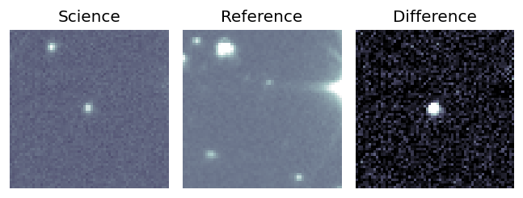
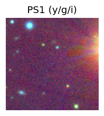
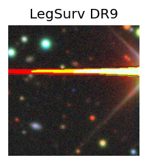
LegacySurvey: 1 sources in 3 arcsec Closest: d = 0.11 arcsec, 71.6 deg (east of north) photoz=0.05 (68% bounds 0.02, 0.14), type=PSF peak abs mag = -19.99 (68% bounds -17.89, -22.07) 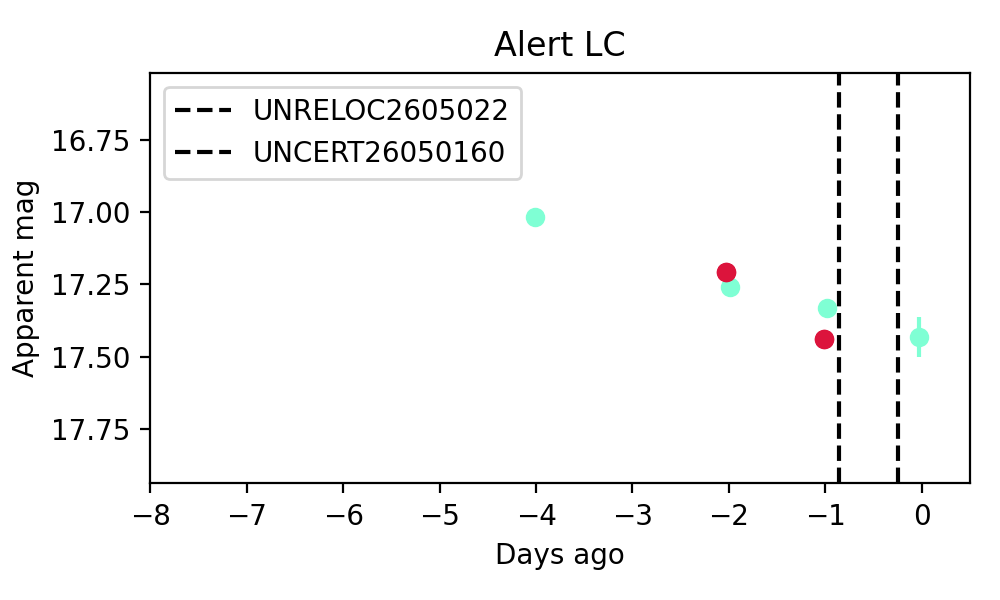
2. ZTF26aaulhso (FBOT?) [Back to Top] [Share] [Trigger Swift] [Fritz ] [Lasair ]RA, Dec: 150.22051, 9.13845 10h 0m52.92s, 9d 8m18.44sGalactic (l, b): 228.77847, 45.95694 WARNING: -2.83 deg from ecliptic plane ext(g-r) = 0.049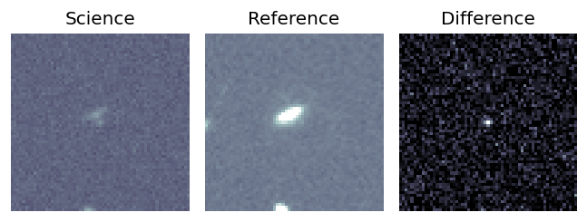
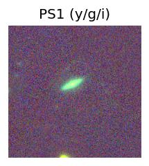
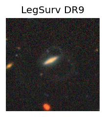
peak abs mag = -19.55 LegacySurvey: 1 sources in 3 arcsec Closest: d = 0.44 arcsec, 272.1 deg (east of north) photoz=0.19 (68% bounds 0.1, 0.31), type=EXP peak abs mag = -21.11 (68% bounds -19.68, -22.38) 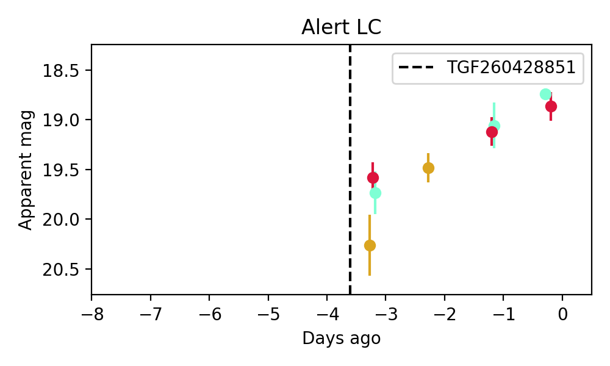
3. ZTF26aaulmvu (FBOT?) [Back to Top] [Share] [Trigger Swift] [Fritz ] [Lasair ]RA, Dec: 159.68049, 33.13996 10h38m43.32s, 33d 8m23.86sGalactic (l, b): 192.91036, 60.80957 ext(g-r) = 0.024peak abs mag = -20.59 LegacySurvey: 1 sources in 3 arcsec Closest: d = 0.39 arcsec, 205.5 deg (east of north) photoz=0.1 (68% bounds 0.06, 0.14), type=REX peak abs mag = -20.08 (68% bounds -18.81, -20.93) Consistent with synchrotron, g-r>0!
4. ZTF26aaulrlo (FBOT?) [Back to Top] [Share] [Trigger Swift] [Fritz ] [Lasair ]RA, Dec: 180.14475, 30.80703 12h 0m34.74s, 30d48m25.32sGalactic (l, b): 191.61542, 78.29204 ext(g-r) = 0.016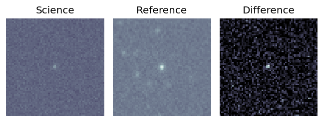
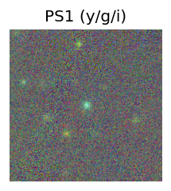
peak abs mag = -19.85 LegacySurvey: 1 sources in 3 arcsec Closest: d = 0.52 arcsec, 210.9 deg (east of north) photoz=0.11 (68% bounds 0.07, 0.18), type=DEV peak abs mag = -19.24 (68% bounds -18.03, -20.45) 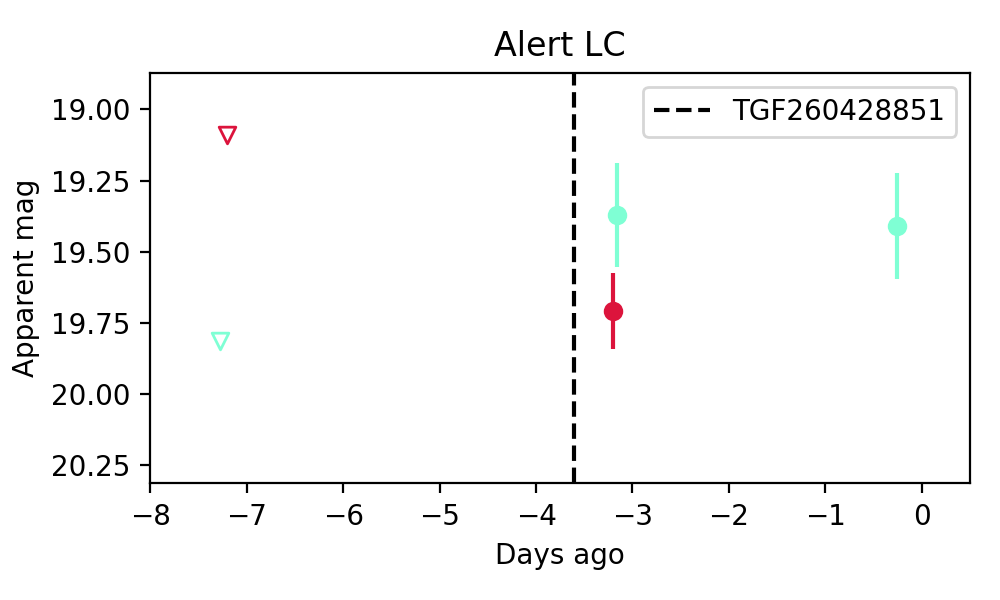
5. ZTF26aaumtdl (FBOT?) [Back to Top] [Share] [Trigger Swift] [Fritz ] [Lasair ]RA, Dec: 242.95677, -12.33424 16h11m49.62s, -12d-20m-3.25sGalactic (l, b): 0.51731, 27.40856 ext(g-r) = 0.309PS1: 1 source in 3 arcsec Closest: d = 0.09 arcsec photoz=0.14+/-0.02 peak abs mag = -21.19 Consistent with synchrotron, g-r>0!
6. ZTF26aauopgl (Afterglow?) [Back to Top] [Share] [Trigger Swift] [Fritz ] [Lasair ]RA, Dec: 294.98721, 9.31759 19h39m56.93s, 9d19m3.32sGalactic (l, b): 46.82466, -6.35482 ext(g-r) = 0.575
7. ZTF26aaurtku (FBOT?) [Back to Top] [Share] [Trigger Swift] [Fritz ] [Lasair ]RA, Dec: 181.63759, -2.22581 12h 6m33.02s, -2d-13m-32.93sGalactic (l, b): 280.93948, 58.71603 WARNING: -1.39 deg from ecliptic plane ext(g-r) = 0.026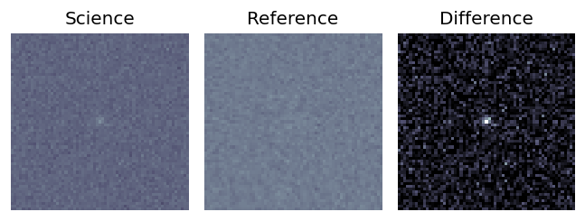
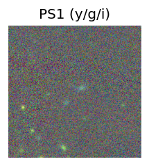
peak abs mag = -20.88 LegacySurvey: 1 sources in 3 arcsec Closest: d = 1.08 arcsec, 348.2 deg (east of north) photoz=0.86 (68% bounds 0.54, 1.39), type=REX peak abs mag = -24.92 (68% bounds -23.67, -26.2) 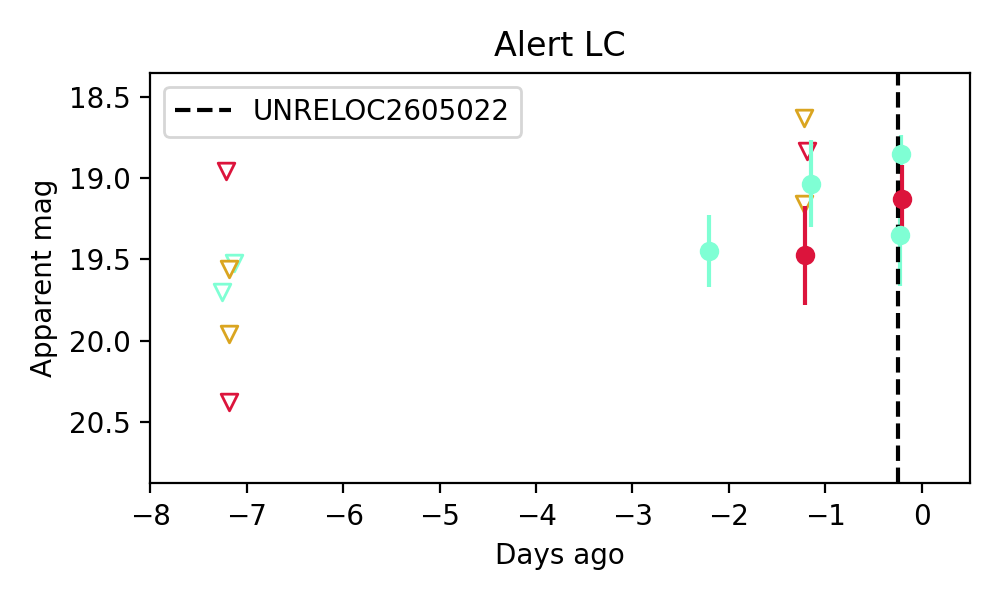